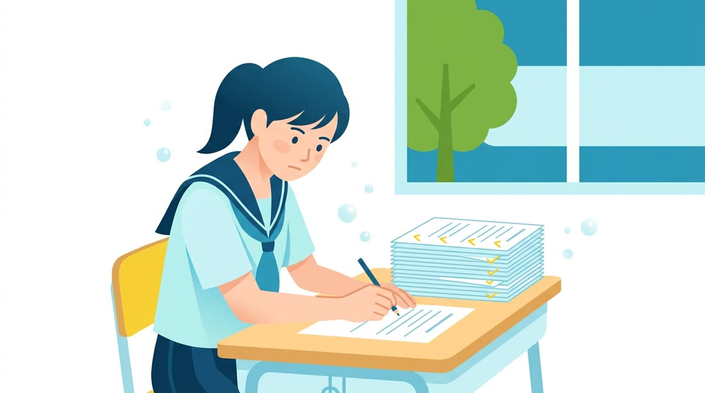

01
PLATINUM
プラチナ — KATEKYO学院が主催する個別指導塾
家庭教師のノウハウを、プラチナ品質で。
KATEぷらは、山梨県でマンツーマン指導を続けてきたKATEKYO学院が主催する個別指導塾です。完全1対1の家庭教師を「ゴールド」とするなら、それに次ぐ価値あるサービスとして、ベテラン講師による質の高い指導（プラチナ品質）を提供します。
KATEKYO学院（山梨県）公式サイト ↗02
PRACTICE
プラクティス — 量をこなして、定着させる
「わかった」を、「できる」に変える。

説明を聞いて「わかった」だけでは、テストで解けるようにはなりません。KATEぷらでは紙のプリントで演習の量をしっかりこなし、くり返し手を動かすことで、わかったつもりを「自分で解ける力」として定着させます。
03
PLAN
プラン — 基礎を大事に、最短のプランを
遠回りしない。でも、土台は飛ばさない。
やみくもな勉強はしません。基礎を大事にしながら、「何を・どの順番でやるか」をプロが判断し、ゴールまでの最短のプランを立てます。「今の単元は何のためにあるか」を共有し、「やらされる勉強」から「目指す勉強」へ。
指導法を見る →04
PLUS
プラス — 自学習をサポートするアプリ
教室の学びに、家での学びをプラス。
講師がAIで作った学習アプリをお配りし、家での自学習をサポートします。ときには、その子のためだけのオーダーメイドアプリも。教室は紙で集中、家ではアプリで復習――日々の学習に「プラス」の成果をもたらします。
学び方を見る →